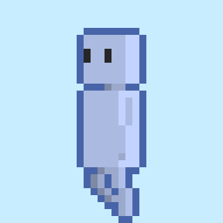

Nogami Yudai
WORKS
ABOUT ME

野上 雄大 (のがみ ゆうだい)
現在、広島市立大学大学院情報科学研究科システム工学専攻に在籍しています。 UnityとC#を用いたVR空間でのアバタの歩行動作について研究開発に注力しています。 創作系サークルと演劇部に所属しています。
また、小中学生向けのプログラミングスクールでのアルバイト経験を通じて、 複雑な技術も相手の目線に立って分かりやすく説明する力を培いました。 生徒たちの「なぜできないか」、「どうすればモチベーションを保てるか」という課題に粘り強く向き合い、 解決に導くサポートを行う中で、コミュニケーション能力と課題発見能力を 向上させることができたと考えています。 この経験を活かし、チーム開発においても円滑な意思疎通と相互理解に貢献したいと考えています。
誕生日: 7月6日
趣味: 創作全般、知らない土地の探検